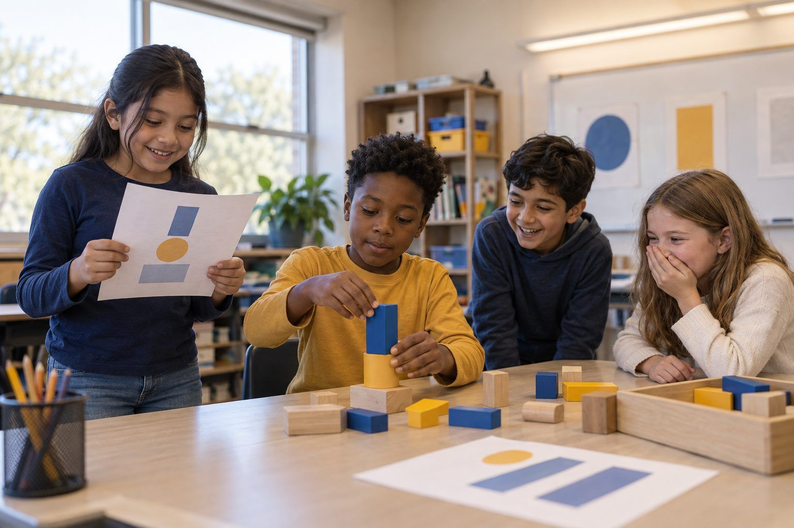

Học tập của học sinhdành cho Lớp K–2
Kiểm Tra Hai Nơi
Một người máy trợ giúp rất tự tin nói những điều lúc đúng lúc sai, và các em trở thành người làm chủ việc học bằng cách kiểm tra mỗi câu trả lời ở hai nơi trước khi tin.

Tất cả hoạt động Học tập của học sinh
Children learn a "help ladder" for when a problem feels hard, then make a homework-help agreement with their family about when to ask AI or a grown-up for the answer and when the struggle itself is the learning.
When homework feels hard, it is tempting to ask a grown-up, or now an AI, for the answer right away. But for a child, the hard part is often where the learning actually happens. This lesson gives kids and families a calm, shared way to handle that moment instead of a fight. Children learn that a stuck feeling is not a stop sign; it is their brain growing, what grown-ups call productive struggle. They practice a "help ladder": try it, use a strategy, ask for a hint, and only then ask for the answer, so that help supports thinking instead of replacing it. They see that AI and grown-ups can both do their thinking for them if they skip the ladder, which feels good but teaches nothing. Then they take home a homework-help agreement to make with their family: when it is fine to get the answer (you are truly stuck after trying) and when the struggle is the point. The message is balanced and kind: help is good, and learning to try first is a superpower.
Khởi động
Ask: "What does your body do when a problem feels too hard?" Collect answers (sigh, want to quit, ask for help fast). Tell them a secret: that stuck feeling is often the exact moment your brain is building something new. Share a quick story of a time struggling taught you something. Say: "Today we learn what to do with the stuck feeling instead of running from it."
Ghi chú cho người điều phốiNormalize the stuck feeling as growth, not failure. Many kids read struggle as "I'm bad at this"; rename it as the brain working.
Làm mẫu
Show Handout A, the help ladder: 1) Try it yourself. 2) Try a strategy (draw it, reread, break it into steps). 3) Ask for a hint, not the answer. 4) Only then, ask for help with the answer, and make sure you understand it. Model climbing it with a tricky problem, thinking aloud at each rung. Point out: if you jump straight to the top, asking AI or a grown-up for the answer, you skip the rungs where learning happens.
Ghi chú cho người điều phốiEmphasize the hint rung. "Ask for a hint" is the move most kids skip, and it's the one that keeps the thinking with them.
Luyện tập
In pairs, children draw a Handout B card with a small challenge (a riddle, a pattern, a word puzzle). They must climb the ladder: try, strategy, then a hint from their partner, before anyone says the answer. Afterward ask: "How did it feel to get a hint instead of the answer? Could you explain how you solved it?" Compare with a card where the partner just blurts the answer, did that teach anything?
Ghi chú cho người điều phốiThe contrast card is key: when the answer is handed over, the solver usually can't re-explain it. Let kids feel that difference.
Khám phá
Discuss the balanced truth: help is good, and sometimes you SHOULD get the answer, when you've truly tried the ladder and you're still stuck, or when you just need a fact to keep going (how to spell a word, what a word means). The trick is not never asking; it's trying first so the help lands on thinking you already started. Ask: "When is asking AI or a grown-up smart? When does it skip your learning?"
Ghi chú cho người điều phốiKeep it from becoming "asking is bad." The goal is try-first, not struggle-forever. A child who never asks for help is also stuck.
Suy ngẫm
Children begin Handout C, the homework-help agreement, to finish at home: draw or write when they'll try first, what their family's "hint, not answer" signal will be, and when it's fine to get help with the answer. Circulate and ask, "What will you try before you ask? What's a good hint your grown-up could give?" Explain they'll decide the rest with their family. Close: "Help is good. Trying first is a superpower."
Ghi chú cho người điều phốiFrame the family agreement as teamwork, the grown-up promises hints before answers, the child promises to try first. Both make a promise.
The whole lesson is unplugged: a printed ladder, challenge cards, role-play, and a drawn agreement. No devices are needed, which keeps the focus on the feeling of trying, getting a hint, and understanding, rather than on any tool.
If a family uses AI for homework help, the agreement can include a rule for it: ask AI for a hint or to check your work after you try, not for the finished answer. A family may keep a photo of the agreement on a phone as a reminder.
Có cần màn hình không? This is best unplugged. The learning is about what a child does in the stuck moment, and a help ladder practiced with a partner teaches it directly; the lesson then names how the same rule applies when the helper is AI.
Những gì bạn có thể quan sát hoặc thu thập được nếu hoạt động thành công.
Children learn a help ladder for productive struggle and make a family homework-help agreement about when to try first and when asking AI or a grown-up skips the learning.
Children finish the homework-help agreement with their family and try the help ladder on real homework for a week, then share in a class circle one time the struggle paid off. Families are encouraged to keep the hint-before-answer habit for AI and grown-ups alike.